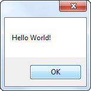
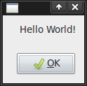
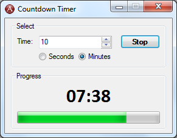
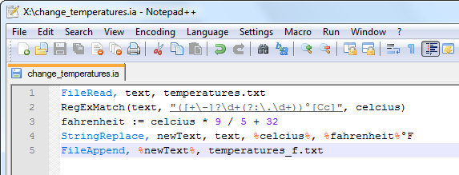

IronAHK is a powerful and easy to use scripting language which features:
- Easy to learn PHP-like syntax
- Simulate keystrokes and mouse movements
- Manipulate windows and processes
- Scripts can be compiled into standalone executables
- Create Graphical User Interfaces (GUIs)
- Edit files and modify directories
- Regular expressions (RegEx)
- Directly call external DLL and P/Invoke functions
- Detailed help file and large community-based support forums
- Runs on .NET or Mono for Linux/Mac
- Unicode and x64 support
- Free and open source software
To get started read the quick-start tutorial.
Examples
 Hello world on Windows and Linux:
MsgBox, Hello World!
A basic countdown timer with a user interface (full source):
Gui, Add, GroupBox, w255 r3 Section, Select
Gui, Add, Text, xs+10 ys+25 Section, Time:
Gui, Add, Edit, vTimeValue ys-2 Limit3 gValidate
Gui, Add, UpDown, vTime Range1-60, 10
Gui, Add, Radio, vSecs, Seconds
Gui, Add, Radio, vMins xp+65 yp Checked, Minutes
Gui, Font, bold
Gui, Add, Button, vRun ys-4 w65 Default gRun, Start
Gui, Font
Gui, Add, GroupBox, xm w255 r4 Section, Progress
Gui, Font, s24 bold, Calibri
Gui, Add, Text, vCount xs+10 ys+20 w235 Center, 00:00
Gui, Add, Progress, vProgress wp r0.5 -Smooth
Gui, Font
GuiControl, Focus, Time
Gui, Show, , Countdown Timer
Return
Editing files with regular expressions and calculations:

FileRead, text, temperatures.txt
RegExMatch(text, "([+\-]?\d+(?:\.\d+))°[Cc]", celcius)
fahrenheit := celcius * 9 / 5 + 32
StringReplace, newText, text, %celcius%, %fahrenheit%°F
FileAppend, %newText%, temperatures_f.txt
Questions
For any questions and advice visit the community forum where you can also share scripts and learn from code written by others.
The IRC is also a great place get help and chat in real time to other users - #ahk on freenode.
For reporting bugs and submitting patches please leave a message on our Google Group.
Copyright © 2010